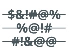

Content moderation refers to all the actions and processes you employ to monitor the text and other media that users post on your platform. This includes screening and removing user-generated content (UGC) that you regard as unacceptable according to your online community standards.
Whether produced by customers, brand loyalists, or employees, UGC is a rapidly growing form of commercial content, and one that is increasingly recognized as an important marketing and engagement resource. People trust the authenticity of UGC more than officially sanctioned branded content.
And there’s a lot of UGC. In one day the 5 billion or so people using the internet produce:
- 300 billion emails
- 500 million tweets on Twitter
- 210 million snaps on Snapchat
- 4 petabytes of data on Facebook
… which is commercially important because:
- 35% of Gen Z believe that UGC makes brands more credible
- 50% of Millennials rate UGC as more trustworthy than other media
- 86% of companies use UGC as part of their digital marketing strategy
But UGC is not just the province of social media companies. Whether or not a piece of UGC is acceptable for some community platform depends on the values of the wider corporation and the purpose of the community, although some behaviors are unacceptable wherever they arise, such as publishing illegal or harmful content. Content moderation may aim to eliminate any and all illegal or toxic behavior from an online community, though it will normally make sense in terms of efficiency to prioritize the types of content that are most relevant for a given platform. For example, content moderation for a dating platform may focus on removing underage users or eliminating abusive or misogynistic content, while an e-commerce platform like Amazon may be more concerned with eliminating sales of drugs and weapons.
How important is content moderation?
Content moderation is clearly important from the point of view of compliance, not to mention basic ethics. You don’t want to be enabling terrorism or child sexual abuse. But content moderation is also a key part of managing your corporate brand; if your users regularly experience hate speech, inappropriate nudity, or depictions of graphic violence, they will simply stop using your platform, with consequences for your brand reputation and revenue. Harmful content harms your business – and that of your advertisers. Conversely, excellent content moderation builds brand loyalty and engagement, as well as providing rich insight into your customer base.
What kind of moderation process should I use?
Your content moderation strategy should take a considered approach to both the timing and the mechanism of your moderation processes.
Pre-moderation means checking a piece of UGC before it is made public, while post-moderation means checking posts after they have been published. The timing of your moderation intervention will depend on weighing up the potential risk of unchecked harmful content versus the advantage of real-time reactivity for your user experience.
As the amount of content on your platform grows, so does the number of moderation decisions. This means that your content moderation process will need to become increasingly efficient as your online community grows. At the same time, you can only have so many human moderators on staff for pre-moderation, so you can shift the intervention point to post-moderation, and instead rely on your online community to moderate its own content. For example, reactive moderation is where community members flag inappropriate content for review by a community admin; or distributed moderation, in which users can up- or down-vote content after submission.
Wouldn’t it be easier to use automation instead of human moderators?
To a large extent, yes. Using machine learning (ML) / artificial intelligence (AI) content moderation tools will give you a scalable solution to your UGC assessment problem. Automation also cuts down another part of the “harm” in harmful content: the toll on your human moderators. Dealing with large volumes of toxic content on a daily basis is an occupational hazard which can harm wellbeing, cause psychological injury e.g., PTSD, and may also result in litigation.
ML / AI can be used for pre-moderation or post-moderation. You can train your algorithms to filter out harmful text, images, and video (which is just a sequence of images) using natural language processing and computer vision in combination with ML / AI. The speed with which ML / AI moderation acts means that harmful content can be filtered almost instantaneously.
But you will still need humans in the loop, firstly to select training data for your machine learning models. Human review will also always play a supervisory role in maintaining efficiency in your content moderation system, for example by implementing ad hoc automated filters, and selecting new datasets to refine and optimize your models as new problematic use cases continue to emerge within your social media platform.
So, you will likely aim for hybrid automation. This is the most common approach, and it entails having an automated agent make pre-moderation decisions on a subset of your UGC, for example posts about which the agent achieves some high level of confidence in its judgment of them. On the other hand, posts that the agent is less confident about would revert to human review, either pre or post. Importantly, the moderation decisions of the human moderators are then used as new training data, helping the algorithm improve, so that an ever-smaller fraction of UGC requires human moderation on your asymptotic path to hypothetical full automation.
Which automation technologies should I consider for my content moderation?
The three main approaches are: do-it-yourself programming, typically using regular expressions along with a blacklist; pre-trained, out-of-the-box AI; and custom AI. Let’s take a closer look at these content moderation automation mechanisms, and compare and contrast them for robustness (ability to handle variation in the content), customizability, and memory (the extent to which fixing one thing will break something else).
| Flexibility. Ability to handle misspellings, synonyms, etc. | Customizability. Ability to tailor the content moderation to your platform. | Robustness. Ability to improve one thing without breaking something else. | |
|---|---|---|---|
| Blacklists  | ❌ Bad. You often have to make entries for each variant of a word. | 🟨 Mediocre. You can add banned words, but no ability to capture nuances in language. | ❌ Bad. As you update your code to catch new content, it is easy to mess up behavior for old content. |
| Pretrained AI | ✅ Good. Deep learning-based AI can “see beyond” spelling. | ❌ Bad. You can only choose between a set of pre-trained AI vendors and what they have. | ✅ Good. Since you can’t change the models, you can’t introduce unintended consequences. |
| Custom AI | ✅ Good. Deep learning-based AI can “see beyond” spelling, synonyms, etc. | ✅ Good. By learning from examples the Custom AI mimics what your human moderation team wants. | ✅ Good. A custom AI learns from all manually curated content, so it won’t forget old issues. However, you need good data management. |
So, the DIY approach might seem like a natural place to start, but it quickly becomes a full-time job to update your list of proscribed terms and check that your updated regular expressions still accurately work on last week’s problems as well as today’s. Apart from this technical headache, you’ll also have a growing pile of tickets raised by users whose content was falsely classed as unacceptable, or who found unacceptable content that needs to be removed. Every growing community eventually reaches an inflection point where the DIY approach becomes painfully inefficient and frustrates too many users.
Time for a ML / AI solution? Yes, it is. Perhaps you will go for an out-of-the-box solution here as a quick way of doing considerably better than a manual approach. The downside is that you cannot customize the model. This means that it won’t be optimized for the particular kind of niche content that your users generate, and your response to problem cases will be limited to “Yes, we’re aware of that issue” or a gradually increasing team of human moderators.
A custom AI can be periodically updated, meaning that its accuracy continues to improve even as new user behavior appears and standards of acceptability change. But you still need a systematic approach to selecting cases of acceptable and unacceptable content such that they are representative of the range of user behavior and balanced in the sense of not being too skewed to a single class of data. This can be done with your own in-house ML expertise or via a managed service such as Nyckel or Imagga.
In conclusion
Content moderation is unavoidable to maintain brand reputation and good user experience. Businesses will need to make two basic choices. The first choice is about when to intervene in the production of UGC: pre- or post-moderation? The second choice is when to start using AI; when will scaling the task of moderating content using naive methods become too costly? The answers to those questions depend on the size of your social media community and your access to ML / AI expertise.